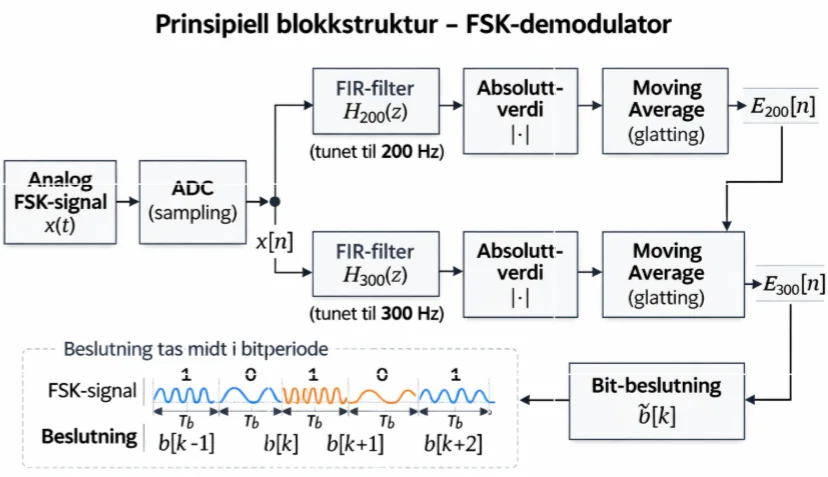
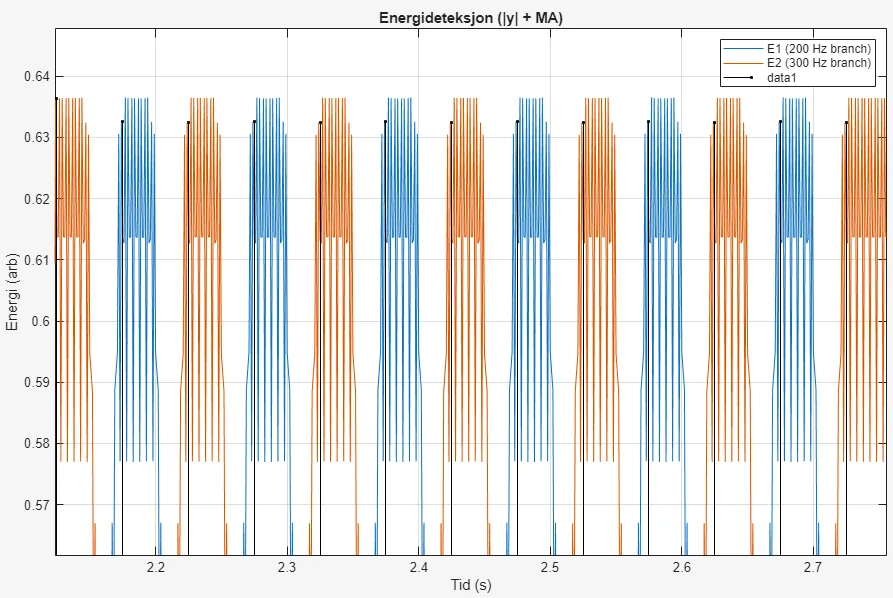
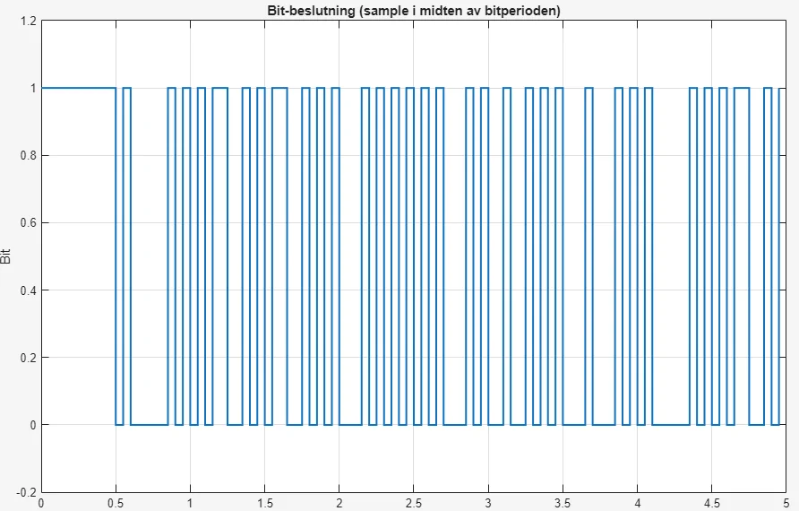

DP10 FSK demodulator
Digital demodulator for UART over FSK (200 and 300 Hz, 20 bit/s), with two parallel FIR filters and energy comparison on the AVR128DB48.

How it works
- Two FIR filters, one per frequency, followed by energy estimation and a decision in the middle of each bit period.
- Real-time solution with a 1 kHz sampling frequency, Q15 coefficients and 32-bit accumulation.
- The algorithm was verified in MATLAB. Full verification with a physical signal from Analog Discovery 2 is described as further work.
Figures





